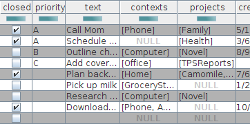

Beim ziellosen Browsen im Internet bin ich über Todo.txt gestolpert, das mir aus verschiedensten Gründen
sofort aus dem Herzen gesprochen hat.
Beim ziellosen Browsen im Internet bin ich über Todo.txt gestolpert, das mir aus verschiedensten Gründen
sofort aus dem Herzen gesprochen hat.
Todo.txt ist vieles: Es ist eine Beschreibung für Syntax und Semantik einer Todo-Liste. Es existiert kein Vendor-Lock-In: die Syntax ist eine einfache Textdatei - Jeder kann eine verfassen. Jeder beliebige Editor kann verwendet werden.
Darauf aufbauend kann man verschiedenste Frontends erstellen: es existieren auch Apps für Android wie auch iOS. Das allein würde natürlich noch nicht erklären, warum mir todo.txt sofort ans Herz gewachsen ist - Die Idee der Einfachheit wird aber noch weiter getragen: es existiert für Unix-artige Betriebssysteme ein Kommandozeilen-Frontend, das genau auf meiner Linie liegt: Die Werkzeuge existieren - man muß sie nur einsetzen. Auch - meiner Ansicht nach - ein hervorragendes Plädoyer für die alte UNIX-Philosophie "Do one thing and do it right!"
Das zeigt sich auch darin, dass die Semantik vollkommen klar ist - es handelt sich um eine Todo-Liste - kein Projekt-Management, keine Aufgabenverwaltung. Es ist eine Liste von Dingen, die abzuarbeiten sind. Es existiert nicht mal eine Abhängigkeitsmodellierung a la "Zuerst muss dieser Task abgearbeitet werden, dann kann jener Task begonnen werden". Es existiert nicht einmal ein Schlüssel für die Aufgaben. Die Lösung ist konsequent darauf ausgerichtet, wie der Mensch arbeitet: Er schreibt sich Dinge auf, die noch zu tun sind.
Für Menschen, die weitere Funktionalitäten anfügen möchten, existiert die Möglichkeiten, dies über Keywords zu tun. Aber - man muss das nicht machen. In seiner Grundform beschreibt Todo.txt eine Aufgabenliste, wie man sie auch auf Papier niederlegen würde. Dazu existiert ein Satz von Syntaxregeln, die es ermöglichen, diese Liste im Computer zu verarbeiten.
Dieses Kommandozeilen-Frontend bietet darüber hinaus aber noch weitere interessante Aspekte: Für mich, der gerne Aufgaben per Shell-Skript löst war es naturgemäß schön, zu sehen, daß es auch andere Menschen gibt, die so arbeiten. Besonders interessant für mich war aber die Architektur des ganzen: Das Frontend ist ein Framework: Es ist über Plugins erweiterbar. Nach allem, was ich gesehen habe ist diese Architektur so elegant, daß man sie auch auf andere Problemstellungen übertragen kann. Das macht das Konzept der Problemlösung per Shell-Skript modularer und damit auch anwendbar auf umfangreichere Aufgaben.
Schließlich war ich angenehm überrascht, als ich herausfand, wer die treibende Kraft hinter Todo.txt ist: Gina Trapani. Irgendwie hatte ich Todo.txt in ihrem Blog übersehen, das ich wirklich gerne lese...
Aktualisierung vom 20. Dezember 2014

Screenshot einer JTable, die die Inhalte einer Todo.txt-Datei darstelltAktualisierung vom 27. Dezember 2014
Aktualisierung vom 18. Oktober 2015


Vor 5 Jahren hier im Blog
-
Verbesserungen ModuleWorkspace I
18.03.2017
In der Zeit über Weihnachten haben sich einige Verbesserungen in der ModuleWorkspace-Komponente - unter anderem verwendet in der sQLshell und im Rapid-Prototyping-Werkzeug dWb+ ergeben, die die allgemeine Benutzbarkeit verbessern:
Weiterlesen...
Tags
Android Basteln C und C++ Chaos Datenbanken Docker dWb+ ESP Wifi Garten Geo Git(lab|hub) Go GUI Gui Hardware Java Jupyter Komponenten Links Linux Markdown Markup Music Numerik PKI-X.509-CA Python QBrowser Rants Raspi Revisited Security Software-Test sQLshell TeleGrafana Verschiedenes Video Virtualisierung Windows Upcoming...
Neueste Artikel
-
LinkCollections 2022 III
Nach der letzten losen Zusammenstellung (für mich) interessanter Links aus den Tiefen des Internet für dieses Jahr folgt hier nunmehr die nächste:
Weiterlesen... -
Static Site Generator für Docbook
Mein eigener Static Site Generator hat jetzt einen Modus, der es gestattet, die Inhalte nicht nur als HTML-Seiten für die Publikation mittels eines HTTP-Servers zu erzeugen, sondern auch als Docbook zur Erzeugung eines PDF-Dokumentes oder E-Book im Format EPUB.
Weiterlesen... -
Trojan Source - Nachschlag
Ich habe weitere interessante Fakten zu der Trojan Source Attacke des letzten Jahres ausgegraben...
Weiterlesen...
Manche nennen es Blog, manche Web-Seite - ich schreibe hier hin und wieder über meine Erlebnisse, Rückschläge und Erleuchtungen bei meinen Hobbies.
Wer daran teilhaben und eventuell sogar davon profitieren möchte, muß damit leben, daß ich hin und wieder kleine Ausflüge in Bereiche mache, die nichts mit IT, Administration oder Softwareentwicklung zu tun haben.
Ich wünsche allen Lesern viel Spaß und hin und wieder einen kleinen AHA!-Effekt...
PS: Meine öffentlichen GitHub-Repositories findet man hier.